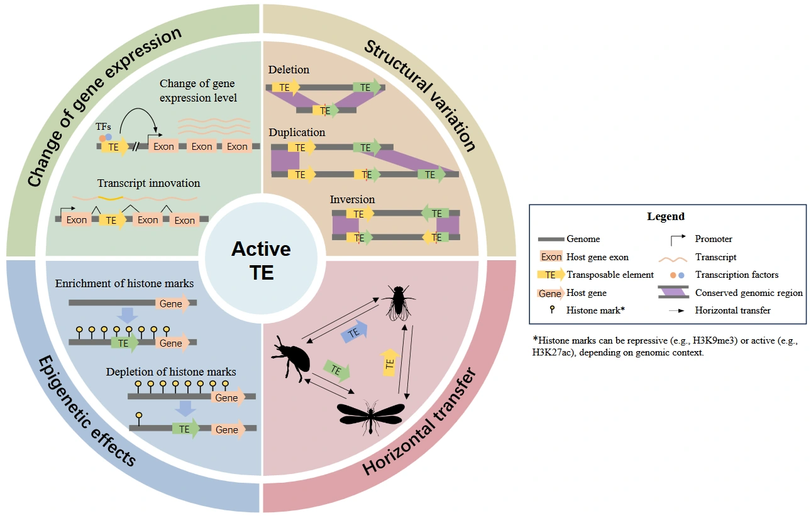
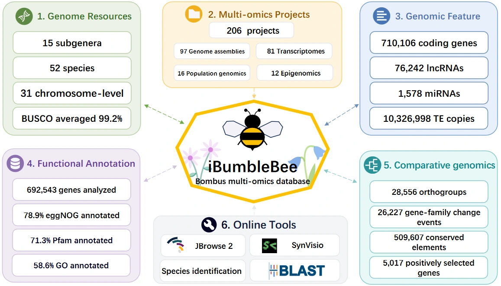
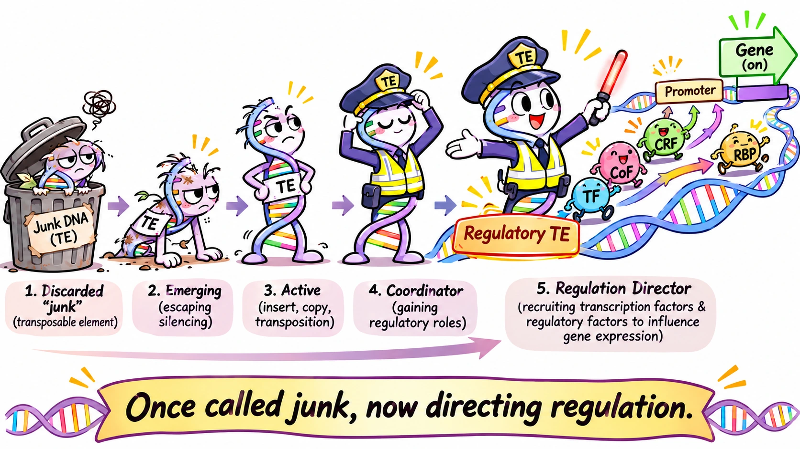

Published review
Mobile DNA and insect adaptation
How can DNA that moves around a genome help insects survive a changing environment?
Seeking PhD opportunities
I’m a third-year master’s student in Bioinformatics at Capital Normal University. I study how mobile DNA shapes insect genomes and build open tools for bumblebee research.


Published review
How can DNA that moves around a genome help insects survive a changing environment?

Master’s thesis · In progress
Tracing the evolutionary history and cell-type expression of transposon-derived genes in bumblebees.

Community database
Genomes, gene expression and comparative tools in one place for researchers working across Bombus species.
Published · Review
Jingting Lv and Cheng Sun
Current Opinion in Insect Science, vol. 79 (2027), 101619. Published online September 14, 2026.
Read paperUnder revision · Research article
Under revision at Molecular Ecology Resources.
Explore the database2022 · Random forest feature selection for ancient glass classification
Predicting material properties with multilayer perceptrons
Social network rumor verification track
FusionBERT-CNN for gene expression prediction
2025 · Explainable multimodal AI
Our review on how active transposable elements contribute to insect adaptation is now online in Current Opinion in Insect Science.
Read the review